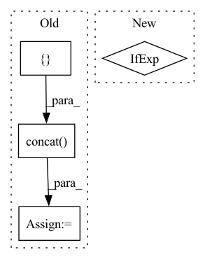

Pattern ID :722

Before Change
else:
df1 = cudf.read_csv(paths[0], header=False, names=allcols_csv)[mycols_csv]
df2 = cudf.read_csv(paths[1], header=False, names=allcols_csv)[mycols_csv]
df = cudf.concat([df1, df2], axis=0)
df["id"] = df["id"].astype("int64")
if engine == "parquet":
columns = mycols_pq
After Change
@pytest.mark.parametrize("engine", ["parquet"])
def test_dropna(tmpdir, df, dataset, engine):
dropna = ops.Dropna()
columns = mycols_pq if engine == "parquet" else mycols_csv
columns_ctx = {}
columns_ctx["all"] = {}
In pattern: SUPERPATTERN
Frequency: 4
Non-data size: 4
Instances
Fragment ID: 3458432
Project Name: nvidia/nvtabular
Commit Name: dd965ca51d17614f24705b81ce66a0648f231f5c
Time: 2020-06-19
Author: github@benfrederickson.com
File Name: tests/unit/test_ops.py
M Class Name: AnonimousClass
N Class Name: AnonimousClass
M Method Name: test_dropna(4)
N Method Name: test_dropna(3)
M Parent Class:
N Parent Class:
M File Name: tests/unit/test_ops.py
N File Name: tests/unit/test_ops.py
M Start Line: 363
M End Line: 381
N Start Line: 214
N End Line: 216
'>
Before Change
columns=["pred_" + str(i) for i in range(horizons)]).sort_index()
if pp:
df = pd.concat([true_outputs, predicted], axis=1)
df.to_csv(os.path.join(self.path, pref + "_" + str(out) + ".csv"), index_label="time")
self.out_cols = [out]
self.process_results(true_outputs.values, predicted.values, pref + "_", index=dt_index, **plot_args)
After Change
batch_size=self.config["batch_size"],
verbose=1)
predicted, true_outputs = self.denormalize_data(inputs[1] if len(inputs)>1 else inputs[0],
predicted,
true_outputs[0],
in_cols=self.in_cols,
'>
Fragment ID: 3458428
Project Name: atrcheema/ai4water
Commit Name: c32b136d6756bcd78a467535b05ac29244e72bf5
Time: 2021-04-27
Author: ather_abbas786@yahoo.com
File Name: examples/MultiInputSharedModel.py
M Class Name: MultiInputSharedModel
N Class Name: MultiInputSharedModel
M Method Name: predict(8)
N Method Name: predict(8)
M Parent Class: Model
N Parent Class: Model
M File Name: examples/MultiInputSharedModel.py
N File Name: examples/MultiInputSharedModel.py
M Start Line: 63
M End Line: 108
N Start Line: 66
N End Line: 113
'>
Before Change
if "seed" in config:
seed_everything(config.seed, workers=True)
contrasted_shapes = []
input_las_dirpath = config.validation_module.predicted_las_dirpath
las_filepath = glob.glob(osp.join(input_las_dirpath, "*.las"))
for las_filepath in tqdm(las_filepath, desc="Evaluating predicted point cloud"):
las_gdf = load_geodf_of_candidate_building_points(las_filepath)
shapes_gdf = vectorize_into_candidate_building_shapes(las_gdf)
// TODO: edit compare_classification_with_predictions, cf. load_post_correction_predicted_las
contrasted_shape = compare_classification_with_predictions(shapes_gdf, las_gdf)
contrasted_shapes.append(contrasted_shape)
contrasted_shapes = pd.concat(contrasted_shapes)
contrasted_shapes["ConfirmedBuildings_frac"] = contrasted_shapes.apply(
lambda x: proportion_of_confirmed_building_points(x), axis=1
)
contrasted_shapes["FalsePositive_frac"] = contrasted_shapes.apply(
After Change
df_out = shapes_gdf.join(contrasted_shape, on="shape_idx", how="left")
output_shp = config.validation_module.operationnal_output_shapefile_name
mode = "w" if not os.isfile(output_shp) else "a"
df_out.to_file(output_shp, mode=mode)
'>
Fragment ID: 3458429
Project Name: ignf/lidar-deep-segmentation
Commit Name: 69c046c66facf806b1c749c048e708b543d5a0a3
Time: 2021-10-25
Author: charles.gaydon@gmail.com
File Name: semantic_val/validate.py
M Class Name: AnonimousClass
N Class Name: AnonimousClass
M Method Name: validate(1)
N Method Name: validate(1)
M Parent Class:
N Parent Class:
M File Name: semantic_val/validate.py
N File Name: semantic_val/validate.py
M Start Line: 49
M End Line: 72
N Start Line: 46
N End Line: 69